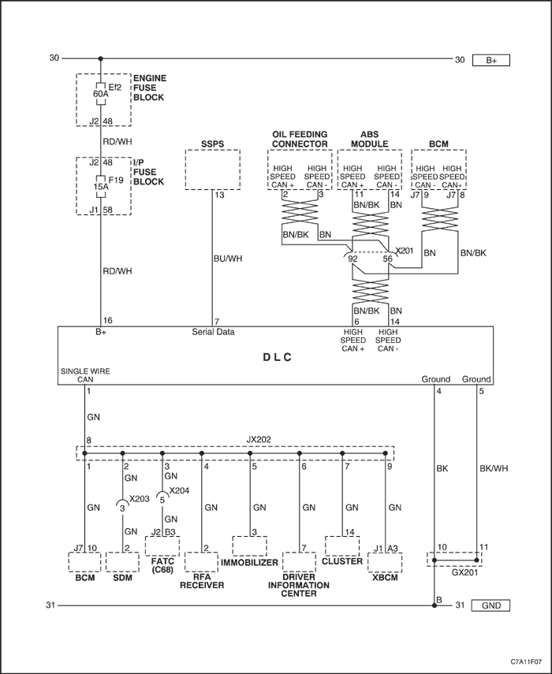
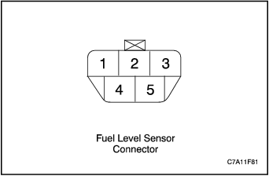

SECCIÓN 1F3
CONTROLES DEL MOTOR - HFV6 3.2L
Precaución: Desconecte el cable negativo de la batería antes de desmontar o instalar cualquier unidad eléctrica o cuando exista la posibilidad de que una herramienta o equipo pueda entrar en contacto con terminales eléctricos expuestos. La desconexión de dicho cable ayudará a evitar lesiones personales y daños al vehículo. La llave de contacto debe estar en posición LOCK a menos que se indique lo contrario.
ESPECIFICACIONES
Lista de datos del scanner
La lista de datos del scanner contiene todos los parámetros relacionados con el motor disponibles en el scanner. La lista está ordenada alfabéticamente. Un parámetro puede aparecer en cualquiera de las listas de datos, y en algunos casos puede aparecer más de una vez, o en más de una lista de datos con el objetivo de agrupar ciertos parámetros relacionados.
Utilice la lista de datos de scanner del motor sólo después de determinar las siguientes condiciones:
- La comprobación del sistema de diagnóstico se ha realizado.
- No hay ningún código de diagnóstico de averías (DTC).
- El diagnóstico funciona correctamente.
Los valores del scanner que llegan desde un motor que funciona correctamente pueden utilizarse para realizar una comparación con el motor que está diagnosticando. La lista de datos de scanner del motor representa los valores que se consideran normales para un motor en funcionamiento.
Importante: No utilice un scanner que muestra datos erróneos. El problema en el scanner deberá ser comunicado al fabricante. El uso de un scanner defectuoso puede provocar un mal diagnóstico y la sustitución innecesaria de piezas.
Sólo los siguientes parámetros aparecen referenciados en esta información de servicio para su uso en diagnósticos. Si los valores están dentro de los márgenes típicos descritos a continuación, consulte el apartado
Síntomas - Controles del motor para diagnóstico. La columna con el encabezado Lista de datos indica dónde está situado un parámetro en el scanner. Revise el manual de funcionamiento del scanner para obtener las ubicaciones exactas de las listas de datos. La siguiente es una descripción de cada término que aparece en la lista:
All: El parámetro está en todas las listas de datos indicadas a continuación. Eng: Datos del motor Ign: Datos de encendido EVAP: Datos de EVAP FT: Datos de regulación de combustible HO2S: Datos de HO2S MF: Datos de fallos de encendido TAC: Datos de TAC CMP: Datos de actuador de CMP ODM: Datos de ODM CH: Datos de refrigeración/HVAC CT: Datos de velocidad de crucero/tracción ET: Datos eléctricos/antirrobo IPC: Datos de IPC IM: Datos de I/M Trans: Datos de transmisión FF: Datos instantáneos FR: Datos de registro de datos Lista de datos del scanner
Parámetro del scanner | Lista de datos | Gama/unidades de parámetros | Valores de lectura normales |
Ralentí de motor/Manguera de radiador caliente/Estacionamiento o punto muerto/Bucle cerrado/Accesorios desactivados |
Historial de desactivación de A/A 1-8 | CH | Razón de desactivación de A/A | varía |
Sensor de presión en el lado de alta del A/A | CH | 0-5 voltios | varía |
Sensor de presión en el lado de alta del A/A | CH | kPa/lbs-pulg2 | varía |
A/A desactivado para WOT | CH | Sí/No | No |
Presión del A/A desactivada | CH | Sí/No | No |
Estado del circuito de relé de A/A | CH, ODM | OK/Avería/Intermitente | OK |
Comando del relé del aire acondicionado | Eng, MF, CH | Conectado/desconectado | Desconectado |
Señal de solicitud del A/A | CH | Sí/No | No |
Ángulo indicado de APP | Eng, Ign, CMP, CT, EVAP, HO2S, FT, TAC, Trans | 0–100% | 0% |
Sensor APP 1 | TAC | 0,9-4,5 voltios | 1 voltio |
Sensor APP 2 | TAC | 0,40-2,25 voltios | 0,4 voltios |
Sensores APP 1 y 2 | TAC | De acuerdo/en desacuerdo | De acuerdo |
BARO | Eng, Ign, CMP, EVAP, HO2S, IM, FT, MF, TAC | 65-104 kPa (8-16 lbs/pulg2) | varía con la altitud |
BARO | Eng, TAC, Trans | Voltios | varía |
Estado de la señal del pedal del freno | CT, TAC, Trans | Válido/No válido | Válido |
ECT calculado - control de combustible de bucle cerrado | CH | De -39°C a +40°C (de -38°F a +104°F) | 40°C (104°F) |
ECT calculado - diagnóstico del termostato | CH | De -39°C a +40°C (de -38°F a +284°F) | 89°C (192°F) |
Temp. TWC calculada Bancada 1 y 2 | FT, MF | Temperatura | varía |
Protección activa del convertidor catalítico | FT, MF | Sí/No | No |
El equipo de control del catalizador completa este encendido | IM | Sí/No | varía |
El equipo de control del catalizador activó este encendido | IM | Sí/No | varía |
Contador de resinc. del CKP | Ign, MF | Cuentas | 0 recuentos |
El equipo de control del componente completa este encendido | IM | Sí/No | varía |
El equipo de control del componente activa este encendido | IM | Sí/No | varía |
Señal de solicitud de giro | ET | Sí/No | No |
Control de velocidad de crucero activo | CT, IPC | Sí/No | No |
Historial de desactivación de velocidad de crucero 1-8 | CT | Motivo | varía |
Motivo de inhibición de velocidad de crucero | CT | Motivo | varía |
Interruptor de activación/desactivación de velocidad de crucero | CT | Conectado/desconectado | Desconectado |
Interruptor de reanudar velocidad de crucero/acel. | CT | Conectado/desconectado | Desconectado |
Interruptor de config. de velocidad de crucero/inercia | CT | Conectado/desconectado | Desconectado |
Marcha actual | Eng, CT, ET, IPC, FT, MF | P/N/Marcha atrás/1ª -5ª | P/N |
Señal de marcha actual | ET, Trans | Válido/No válido | Válido |
Datos de ciclos de fallos de encendido | MF | 0-200 recuentos | varía |
Estado del circuito de los inyectores de los cilindros 1-6 | ODM | OK/Avería/Intermitente | OK |
Retardo de detonación de los cilindros 1-6 | Ign | Grado | 0 grados |
deceleración corte de combustible | Eng, FT, HO2S | Activo/inactivo | Inactivo |
CMP esc. deseado (bancada 1 ó 2) | CMP | Grado | varía |
Sensor 1 HO2S deseado (bancada 1 ó 2) | HO2S | Sonda lambda | varía |
Velocidad de ralentí deseada | Eng, EVAP, CMP, TAC | 0-7.000 rpm | 650 RPM |
CMP adm. deseado (bancada 1 ó 2) | CMP | Grados | varía |
El DTC activa este encendido | Eng, Ign, CMP, EVAP, FT, HO2S, TAC | Sí/No | No |
Comando del relé de encendido EC | Eng, TAC, ET | Conectado/desconectado | Conectado |
Señal de retorno del relé de encendido EC | Eng, TAC, ET | 0-25,5 voltios | 12,0-14,5 voltios |
Reinicio ECM | Eng, Ign, EVAP, FT | Sí/No | No |
ECT | Eng, Ign, CMP, EVAP, HO2S, FF, FR, FT, MF, TAC, CH, IM, IPC, Trans | De -39°C a +140°C (de -38°F a +284°F) | varía |
Carga del motor | Eng, Ign, CMP, EVAP, HO2S, FF, FR, FT, MF, TAC, CH, Trans | 0-99% | 0-5% - Ralentí 3-7% - 2.500 RPM |
Se cumplen las condiciones de prueba EVAP con motor apagado | evap | Sí/No | varía |
Tiempo de apagado del motor | EVAP, IM | 0:00:00 segundos | varía |
Interruptor de nivel de aceite del motor | Eng, CMP, IPC | OK/Bajo | OK |
Vida útil restante del aceite del motor | CMP, IPC | % | varía |
Sensor de presión del aceite del motor | IPC | OK, Bajo | OK |
Sensor de presión del aceite del motor | Eng, MF, CMP, IPC | kPa/lbs-pulg2 | varía |
Sensor de presión del aceite del motor | IPC, MF | 1-5 voltios | varía |
Tiempo de funcionamiento del motor | Eng, Ign, ET, EVAP, FT, HO2S, MF, TAC, CMP, ODM, CH, CT, IM | 0:00:00 | varía |
Velocidad del motor | TODO | RPM | 575-700 RPM |
El equipo de control del EVAP completa este encendido | IM | Sí/No | varía |
El equipo de control del EVAP activa este encendido | IM | Sí/No | varía |
Estado del circuito del solenoide de purga EVAP | ODM | OK/Avería/Intermitente | OK |
Comando del solenoide de purga del EVAP | Eng, EVAP, FT | 0-100% | varía |
Estado del circuito del solenoide de ventilación del EVAP | ODM | OK/Avería/Intermitente | OK |
Comando del solenoide de ventilación del EVAP | Eng, EVAP, FT | Ventilación/Sin ventilación | Ventilación |
Ángulo CMP esc. (bancada 1 ó 2) | Eng, CMP | Grados | varía |
Variación de ángulo CMP esc. (bancada 1 ó 2) | CMP | Grados | varía |
Comando de CMP esc. (bancada 1 ó 2) | CMP | 0-99% | varía |
Estado del circuito solenoide CMP esc. (bancada 1 ó 2) | ODM | OK/Avería/Intermitente | OK |
Interruptor del pedal de freno de carrera ampliada | Eng, TAC, CT | Aplicado/liberado | Liberado |
Estado del circuito del relé 1 de FC | CH, ODM | OK/Avería/Intermitente | OK |
Comando del relé 1 de FC | CH | Conectado/desconectado | varía |
Comando de los relés 2 y 3 de FC | CH | Conectado/desconectado | varía |
Estado del circuito de los relés 2 y 3 de FC | CH, ODM | OK/Avería/Intermitente | OK |
nivel de combustible | evap | 0–100% | varía |
Sensor de nivel de combustible | EVAP, IPC | 0-5 voltios | varía |
Estado del circuito del relé de la bomba de combustible | ODM | OK/Avería/Intermitente | OK |
Comando del Relé de la bomba de combustible | Eng | Conectado/desconectado | Conectado |
Resto del nivel de depósito de combustible | Eng, EVAP, IPC, MF, IM | Litro/galón | varía |
Sensor de presión del depósito de combustible | evap | pulg. H2O/mm Hg | varía |
Sensor de presión del depósito de combustible | Eng, EVAP | 0.5 voltios | varía |
Capacidad nominal del depósito de combustible | evap | Litro/galón | 17,8 galones (67,3 litros) |
Memorización de regulación de combustible | Eng, EVAP, FT, HO2S | Activado/desactivado | Activado |
GEN L-Comando de señal de terminal | ET | 0-100% | varía |
Señal de terminal F del alternador | ET | 0-100% | varía |
Sensor 1 HO2S (bancada 1 ó 2) | Eng, EVAP, FT, HO2S | 0-1.006 mV | Varía entre 400 y 700 mV |
Sensor 1 HO2S (bancada 1 ó 2) | Eng, FT, HO2S | 0-1.006 mV | Varía entre 400 y 700 mV |
El equipo de control del calentador HO2S completa este encendido | IM | Sí/No | varía |
El equipo de control del calentador HO2S activó este encendido | IM | Sí/No | varía |
Cal. HO2S Estado del circuito de los sensores 1 ó 2 (bancada 1 ó 2) | ODM | OK/Avería/Intermitente | OK |
Cal. HO2S Comando del sensor 1 (bancada 1 ó 2) | HO2S | 0-99% | varía |
El equipo de control del HO2S/O2S completa este encendido | IM | Sí/No | varía |
El equipo de control de HO2S/O2S activó este encendido | IM | Sí/No | varía |
Sensor 1 del elemento de detección de HO2S (bancada 1 ó 2) | HO2S | Ohmios | 20-300 ohmios, depende de la temperatura |
Sensor 2 del elemento de detección de HO2S (bancada 1 ó 2) | HO2S | Ohmios | 20-300 ohmios, depende de la temperatura |
IAT | Eng, Ign, EVAP, FT, FF, FR, HO2S, IM, TAC, CMP, CH, Trans | Trans, de-39° a +140°C (de -38° a +284°F) | varía |
Señal de encendido 0 | Eng, Ign, EVAP, TAC, ET, IM, IPC, Trans | Conectado/desconectado | Conectado |
Señal de encendido 1 | Eng, Ign, EVAP, FT, MF, TAC, CMP, ET, IM, IPC, Trans | Conectado/desconectado | Conectado |
Estado del circuito del solenoide IMRC | ODM | OK/Avería/Intermitente | OK |
Comando del solenoide IMRC | Eng | Conectado/desconectado | Desconectado |
Señal de aplicación del freno inicial | TAC, CT | Aplicado/liberado | Liberado |
Comando de los inyectores 1-6 | FT, MF | Ms | varía |
Media PWM de los inyectores (bancada 1 ó 2) | FT, MF | 0-9 ms | 4,6-5,4 ms |
Ángulo CMP adm. (bancada 1 ó 2) | Eng, CMP | Grados | varía |
Variación de ángulo CMP adm. (bancada 1 ó 2) | CMP | Grados | varía |
Comando de CMP adm. (bancada 1 ó 2) | CMP | 0–99% | varía |
Estado del circuito solenoide CMP adm. (bancada 1 ó 2) | ODM | OK/Avería/Intermitente | OK |
Retardo de detonación | Eng, Ign, CH | Grados | Varía |
Señal KS 1 ó 2 | Ign | Voltios | varía |
Sensor 1 del estado de bucle 1 ó 2 | Eng, EVAP, FT, HO2S, FF, FR | Bucle abierto/bucle cerrado | bucle cerrado |
Sensor 2 del estado de bucle 1 ó 2 | Eng, EVAP, FT, HO2S, FF, FR | Bucle abierto/bucle cerrado | bucle cerrado |
Velocidad de crucero/acel. LT FT (bancada 1 ó 2) | Eng, EVAP, FT, HO2S | De -100% a +100% | 0% |
Ralentí/decel. LT FT (bancada 1 ó 2) | Eng, EVAP, FT, HO2S | De -100% a +100% | 0% |
Sensor MAF | Eng, Ign, FT, HO2S, MF, TAC, CMP, FF, FR, Trans | 0-655 g/s | 3,4-6,3 g/s |
Sensor MAF | Eng, Ign, EVAP, FT, HO2S, MF, TAC, CMP, Trans | 0-5 voltios | 0,9-1,7 voltios |
Estado circuito MIL | IPC, ODM | OK/Avería/Intermitente | OK |
Comando MIL | Eng, EVAP, IM, IPC, Trans | Conectado/desconectado | Desconectado |
Distancia desde borrado de DTC | FF, FR | km - millas | varía |
Distancia desde primer fallo | FF, FR | km - millas | varía |
Distancia desde último fallo | FF, FR | km - millas | varía |
Distancia desde solicitud de la MIL | FF, FR | km - millas | varía |
Fallo de encendido Cil. 1-6 | MF | 0-255 recuentos | 0 |
Historial de fallos de encendido del cil. 1-6 | MF | 0-65.535 recuentos | 0 |
El equipo de control de fallos de encendido completa este encendido | IM | Sí/No | varía |
El equipo de control de fallos de encendido activó este encendido | IM | Sí/No | varía |
Señal de aplicación del freno moderada | TAC, CT | Aplicado/liberado | Liberado |
Interruptor PNP | Eng, ET, Trans | Estacionamiento/punto muerto/marcha | P/N |
enriquecimiento de potencia | Eng, FT, HO2S, MF | Activo/inactivo | Inactivo |
PRNDL | Trans | D1, D2, D3, D4, D5, Punto muerto, Estacionamiento, Marcha atrás | estacionamiento/punto muerto |
Potencia de motor reducida | Eng, TAC, IP | Activo/inactivo | Inactivo |
FT a corto plazo (bancada 1 ó 2) | Eng, EVAP, FT, HO2S, FF, FR | De -25% a +25% | de -3% a +3% |
Chispa | Eng, Ign, FT, HO2S, MF, CH, CT, FF, FR | De -20 a +40 grados | 2-10 grados |
Estado del circuito del relé del motor de arranque | ET, ODM | OK/Avería/Intermitente | OK |
Comando del relé del motor de arranque | ET | Conectado/desconectado | Desconectado |
ECT arranque | EVAP, FT, HO2S, CH, IM | De-39° a +140°C (de -38° a +284°F) | varía |
IAT de arranque | EVAP, FT, HO2S, CH, IM | De-39° a +140°C (de -38° a +284°F) | varía |
Interruptor del pedal de freno | Eng, CT, TAC | Aplicado/liberado | Liberado |
Modo de potencia del sistema | EVAP, TAC, ET | Desactivado, Accesorio, RAP, En funcionamiento o Solicitud de giro | En funcionamiento |
Recuentos memorizados del sistema TAC | TAC | 0-11 recuentos | 0 |
Interruptor del pedal de freno TCC | CT, IM, Trans | Aplicado/liberado | Liberado |
Estado del TCC | Eng, MF, Trans | Bloqueado/desbloqueado | Desbloqueado |
Par solicitado del TCM | CT, TAC, Trans | N•m/lb-pie | varía |
Aumento de par del TCM | CT, TAC, Trans | Sí/No | No |
Aumento de par del TCS | CT, TAC | Sí/No | No |
Reducción activa del par del TCM | CT, TAC, Trans | Sí/No | No |
Reducción activa del par del TCS | CT, TAC | Sí/No | No |
Señal de par entregado | FT, TAC, CT | 0-100% | varía |
Señal de solicitud de par | FT, TAC, CT | 0-100% | 90-98% |
Promedio total de regulación de combustible Bancada 1 ó 2 | EVAP, FT, HO2S | De -100 a +100% | varía |
Recuento total de fallos de encendido | MF | Cuentas | 0 |
Ángulo deseado de TP | Eng, EVAP, TAC, CT | 0-100% | varía |
Ángulo indicado de TP | Eng, Ign, EVAP, FT, HO2S, MF, TAC, CMP, CT, FF, FR, Trans | 0-100% | varía |
Sensor 1 de TP | TAC | 0-5 voltios | 0,5-0,8 voltios |
Mínimo memorizado del sensor 1 de TP | TAC | 0-5 voltios | 0-0,6 voltios |
Sensor 2 de TP | TAC | 0-5 voltios | 4,7-4,1 voltios |
Mínimo memorizado del sensor 2 de TP | TAC | 0-5 voltios | 5-3,7 voltios |
Sensores 1 y 2 de TP | TAC | De acuerdo/en desacuerdo | De acuerdo |
Estado de control de tracción | TAC, CT | Activo/inactivo | Inactivo |
Señal del selector de velocidades de la transmisión | Trans | Válido/No válido | Válido |
Estado de seguridad del vehículo | ET, IPC | Memorización de contraseña, VTD con activación de fallos, Temporizador de memorización automática, Desactivar combustible hasta encendido en OFF, Periodo de desactivación de combustible y Continuar combustible | Continuar combustible |
sensor de velocidad del vehículo | Eng, Ign, EVAP, FT, HO2S, MF, TAC, CMP, CH, CT, IM, IPC, FF, FR, Trans | Km/h mph | varía |
Eficacia volumétrica | Eng, Ign, EVAP, FT, HO2S, MF, TAC, CMP, CH, Trans | 0-100% | 5-25% - Ralentí y a 2.500 RPM |
Definiciones de la lista de datos del scanner
La lista de definiciones de datos del scanner contiene una breve descripción de todos los parámetros relacionados con el motor disponibles en el scanner. La lista está ordenada alfabéticamente. Un parámetro concreto puede aparecer en cualquiera de las listas de datos. En algunos casos, el parámetro puede aparecer más de una vez, o en más de una lista de datos para poder agrupar ciertos parámetros relacionados.
Historial de desactivación de A/A 1-8: El parámetro muestra las últimas 8 desconexiones del A/A en orden de la 1 a la 8, siendo la 8 la más reciente. Hay unas 8 causas posibles para que el compresor de A/A se desconecte.
Sensor de presión en el lado de alta del A/A: Este parámetro muestra la tensión desde el circuito de señal de presión en el lado de alta del A/A hasta el módulo de control.
Sensor de presión en el lado de alta del A/A: Este parámetro muestra la presión desde el circuito de señal de presión en el lado de alta del A/A hasta el módulo de control.
A/A desactivado para WOT: Este parámetro muestra si el módulo de control ordena la desactivación del relé del embrague del compresor del aire acondicionado para acelerador abierto al máximo (WOT).
Presión del A/A desactivada: Este parámetro muestra si la presión del aire acondicionado (A/A) está fuera del intervalo para su normal funcionamiento según se determina por parte del módulo de control.
Estado del circuito de relé de A/A: Este parámetro muestra el estado del circuito de control del relé de embrague del aire acondicionado (A/A). El parámetro muestra Fallo si hay un circuito abierto, derivación a masa o cortocircuito con la tensión en el circuito de control del relé del embrague de A/A. El parámetro muestra Indeterminado hasta que se ordena la activación del circuito. Este parámetro no puede cambiar si el scanner se utiliza para activar el relé del A/A.
Comando del relé de A/A: Este parámetro muestra el estado del circuito del relé del embrague del aire acondicionado (A/A) según la orden recibida por parte del módulo de control.
Señal I de solicitud del A/A: Este parámetro muestra el estado de la entrada de solicitud del Aire acondicionado (A/A) al módulo de control desde los controles de calefacción, ventilación y aire acondicionado (HVAC).
Ángulo indicado de APP: Este parámetro muestra el ángulo de posición del pedal acelerador (APP) según el cálculo realizado por el módulo de control utilizando las señales de los sensores de APP.
Sensor APP 1: Este parámetro muestra la tensión actual del circuito de señal del sensor 1 de posición del pedal acelerador (APP) según la medición realizada por el módulo de control.
Sensor APP 2: Este parámetro muestra la tensión actual del circuito de señal del sensor 2 de posición del pedal acelerador (APP) según la medición realizada por el módulo de control.
Sensores APP 1 y 2: Este parámetro muestra En desacuerdo si el módulo de control detecta que la tensión de señal desde el sensor APP 1 no está en relación correcta con el sensor APP 2. El scanner muestra De acuerdo en condiciones de funcionamiento normal.
BARO: Este parámetro muestra la presión atmosférica. El módulo de control utiliza la presión atmosférica para que el control de combustible compense las diferencias de altitud.
Estado de la señal del pedal del freno: Este parámetro muestra el mensaje de datos serie de la señal de freno desde el EBTCM.
ECT calculado - Control de combustible de bucle cerrado: Este parámetro muestra la temperatura modelada que el módulo de control calcula desde la entrada de aire en el motor, temperatura del refrigerante y la temperatura del aire ambiente. Si la temperatura real del refrigerante del motor no alcanza esta temperatura calculada en un tiempo predeterminado, se activará un DTC.
ECT calculado - diagnóstico del termostato: Este parámetro muestra la temperatura modelada que el módulo de control calcula desde la entrada de aire en el motor, temperatura del refrigerante y la temperatura del aire ambiente. Si la temperatura real del refrigerante del motor no alcanza esta temperatura calculada en un tiempo predeterminado, se activará un DTC.
Temp. TWC calculada Bancada 1 ó 2: Este parámetro muestra la temperatura del convertidor catalítico según los cálculos del módulo de control.
Protección activa del convertidor catalítico: Este parámetro muestra si el módulo de control ordena la protección del convertidor catalítico.
El equipo de control del catalizador completa este encendido: Este parámetro muestra el estado de finalización del equipo de control durante el ciclo actual de conducción/control.
El equipo de control del catalizador activó este encendido: Este parámetro muestra el estado de activación del equipo de control durante el ciclo actual de conducción/control.
Contador de resinc. del CKP: Este parámetro muestra el número de veces que el módulo de control se sincroniza con el sensor CKP.
El equipo de control del componente completa este encendido: Este parámetro muestra el estado de finalización del equipo de control de diagnóstico durante el ciclo actual de conducción/control.
El equipo de control del componente activó este encendido: Este parámetro muestra el estado de activación del equipo de control de diagnóstico durante el ciclo actual de conducción/control.
Solicitud de giro: Este parámetro muestra si el interruptor de contacto ha pasado a la posición de giro, solicitando al módulo de control que active el relé del motor de arranque.
Control de velocidad de crucero activo: Este parámetro muestra el estado del sistema de control de velocidad de crucero según lo determina el módulo de control.
Historial de desactivación de velocidad de crucero 1-8: El parámetro muestra las últimas 8 desconexiones del control de velocidad de crucero en orden de la 1 a la 8, siendo la 8 la más reciente. Hay unas 33 causas posibles para que el control de velocidad de crucero se desconecte.
Motivo de inhibición de velocidad de crucero: Este parámetro muestra el motivo por el que se inhibe la velocidad de crucero.
Interruptor de activación/desactivación de velocidad de crucero: Este parámetro muestra el estado de la entrada del interruptor de conexión/desconexión del control de crucero en el módulo de control.
Interruptor de reanudar velocidad de crucero/acel.: Este parámetro muestra el estado de la entrada de posición del interruptor de reanudar velocidad de crucero/acel. en el módulo de control.
Interruptor de config. de velocidad de crucero/inercia: Este parámetro muestra el estado de la entrada de posición del interruptor de configurar velocidad de crucero/inercia en el módulo de control.
Marcha actual: Este parámetro muestra la marcha ordenada por el módulo de control de la transmisión.
Señal de marcha actual: Este parámetro muestra No válido si el mensaje de datos serie del módulo de control de transmisión (TCM) no es válido.
Datos de ciclos de fallos de encendido: Este parámetro muestra el número de pruebas de fallos de encendido durante 200 revoluciones del motor.
Estado del circuito de los inyectores de los cilindros 1-6: Este parámetro muestra el estado del circuito de control de los inyectores de combustible. El parámetro muestra Fallo si hay un circuito abierto, derivación a masa o cortocircuito con la tensión en el circuito de control de los inyectores de combustible. Este parámetro muestra Indeterminado hasta que el circuito de control recibe la orden de activarse.
Retardo de detonación de los cilindros 1-6: Este parámetro muestra el retardo de detonación según lo ordena el módulo de control para los cilindros 1-6. Cada cilindro se controla de forma individual basándose en ambas entradas de señal de los sensores de detonación.
corte de combustible en deceleración: Este parámetro muestra el estado del modo de funcionamiento del módulo de control utilizado para desactivar los inyectores de combustible y la válvula de purga del cartucho del EVAP durante ciertas condiciones de deceleración.
CMP esc. deseado (bancada 1 ó 2): Este parámetro muestra el ángulo de árbol de levas deseado según lo ordena el módulo de control.
Sensor 1 HO2S deseado (bancada 1 ó 2): Este parámetro muestra el valor de la sonda lambda HO2S deseado según lo ordena el módulo de control.
Velocidad de ralentí deseada: Este parámetro muestra la velocidad de ralentí de motor deseada según la ordena el módulo de control.
CMP adm. deseado (bancada 1 ó 2): Este parámetro muestra el ángulo de árbol de levas de admisión deseado según lo ordena el módulo de control.
El DTC activa este encendido: Este parámetro muestra Sí si se activa un DTC en el ciclo de encendido actual.
Comando del relé de encendido EC: Este parámetro muestra el estado del circuito de control para el relé de potencia del módulo de control según lo ordena el módulo de control.
Señal de retorno del relé de encendido EC: Este parámetro muestra la tensión disponible en el contacto del relé de encendido EC del módulo de control.
Reinicio ECM: Este parámetro muestra Sí cuando se da un reinicio interno en el módulo de control. El scanner muestra NO en condiciones de funcionamiento normales.
Sensor ECT: Este parámetro muestra la temperatura del refrigerante del motor basándose en la entrada al módulo de control desde el sensor de temperatura de refrigerante del motor (ECT).
Carga del motor: Este parámetro muestra la carga calculada del motor en porcentaje basándose en las entradas al módulo de control desde diferentes sensores del motor.
Se cumplen las condiciones de prueba EVAP con motor apagado: Este parámetro muestra Sí si se cumplen las condiciones para la prueba EVAP con motor apagado.
Tiempo de apagado del motor: Este parámetro muestra la cantidad de tiempo que ha pasado desde que el motor estuvo apagado por última vez.
Interruptor de nivel de aceite del motor: Este parámetro muestra si el nivel de aceite del motor está dentro de los valores determinados por el módulo de control a partir de la información recibida del interruptor de aceite del motor.
Vida útil restante del aceite del motor: Este parámetro muestra el porcentaje de vida útil restante del aceite del motor. El controlador calcula la vida útil restante del aceite del motor mediante el control de la carga del motor, la temperatura del refrigerante y el régimen del motor.
Sensor de presión del aceite del motor: Este parámetro muestra OK si la presión del aceite del motor está dentro del intervalo correcto. Si el módulo de control detecta que la presión del aceite del motor no está dentro de los valores correctos, el scanner muestra Bajo.
Sensor de presión del aceite del motor: Este parámetro muestra la presión del aceite del motor.
Sensor de presión del aceite del motor: Este parámetro muestra la señal de tensión recibida por el módulo de control del sensor de presión de aceite del motor (EOP).
Tiempo de funcionamiento del motor: Este parámetro muestra el tiempo transcurrido desde que se arrancó el motor.
Velocidad del motor: Este parámetro muestra la velocidad de giro del cigüeñal del motor a partir de la información recibida desde el sensor de posición del cigüeñal (CKP). Si hay un DTC en el sensor CKP, el ECM calcula el régimen del motor a partir de uno de los sensores de posición del árbol de levas (CMP).
El equipo de control del EVAP completa este encendido: Este parámetro muestra el estado de finalización del equipo de control de diagnóstico durante el ciclo actual de conducción/control.
El equipo de control del EVAP activó este encendido: Este parámetro muestra el estado de activación del equipo de control de diagnóstico durante el ciclo actual de conducción/control.
Estado del circuito del solenoide de purga EVAP: Este parámetro muestra el estado del circuito de control del solenoide de purga de emisión de vapores (EVAP). El parámetro muestra Fallo si hay un circuito abierto, derivación a masa o cortocircuito con la tensión en el circuito de control del solenoide de purga EVAP. Este parámetro muestra Indeterminado hasta que el circuito de control recibe la orden de activarse.
Estado del circuito del solenoide de ventilación del EVAP: Este parámetro muestra el estado del circuito de control del solenoide de ventilación EVAP. El parámetro muestra Fallo si hay un circuito abierto, derivación a masa o cortocircuito con la tensión en el circuito de control del solenoide de ventilación EVAP. El parámetro muestra Indeterminado hasta que se ordena la activación del circuito. Este parámetro no puede cambiar si el scanner se utiliza para activar el solenoide de ventilación EVAP.
Solenoide de purga del EVAP: Este parámetro muestra el estado del circuito de control para el solenoide de ventilación de emisión de vapores (EVAP) según lo ordena el módulo de control. Ángulo
CMP esc. (bancada 1 ó 2): Este parámetro muestra el estado del circuito de control para el relé de potencia del módulo de control según lo ordena el módulo de control.
Variación de ángulo CMP esc. (bancada 1 ó 2): Este parámetro muestra, en grados, la diferencia entre la posición deseada del árbol de levas de escape y la posición real del árbol de levas de escape.
Comando de CMP esc. (bancada 1 ó 2): Este parámetro muestra la posición del árbol de levas de escape en porcentaje del valor ordenado por parte del módulo de control.
Estado del circuito solenoide CMP esc. (bancada 1 ó 2): Este parámetro muestra el estado del circuito de control del solenoide del actuador del árbol de levas de escape. El parámetro muestra Fallo si hay un circuito abierto, derivación a masa o cortocircuito con la tensión en el circuito de control del solenoide del actuador del árbol de levas. Este parámetro muestra Indeterminado hasta que el circuito de control recibe la orden de activarse.
Interruptor del pedal de freno de carrera ampliada: Este parámetro muestra el estado del pedal de freno tal y como viene determinado por el módulo de control desde la posición del interruptor del pedal de freno de carrera ampliada.
Estado del circuito del relé 1 de FC: Este parámetro muestra el estado del circuito de control del relé del ventilador. El parámetro muestra Fallo si hay un circuito abierto, derivación a masa o cortocircuito con la tensión en el circuito de control del relé del ventilador. Este parámetro muestra Indeterminado hasta que el circuito de control recibe la orden de activarse.
Comando del relé 1 de FC: Este parámetro muestra el estado ordenado por parte del módulo de control del circuito de control del relé del ventilador.
Comando de los relés 2 y 3 de FC: Este parámetro muestra el estado ordenado por parte del módulo de control del circuito de control del relé del ventilador.
Estado del circuito de los relés 2 y 3 de FC: Este parámetro muestra el estado del circuito de control del relé del ventilador. El parámetro muestra Fallo si hay un circuito abierto, derivación a masa o cortocircuito con la tensión en el circuito de control del relé del ventilador. Este parámetro muestra Indeterminado hasta que el circuito de control del relé recibe la orden de activarse.
Nivel de combustible: Este parámetro muestra la cantidad de combustible en el depósito de combustible en porcentaje del valor, según los cálculos del módulo de control.
Sensor izquierdo de nivel de combustible del depósito (secundario): Este parámetro muestra la señal de tensión recibida por parte del módulo de control desde el sensor de nivel de combustible izquierdo o secundario.
Sensor derecho de nivel de combustible del depósito (principal): Este parámetro muestra la señal de tensión recibida por parte del módulo de control desde el sensor de nivel de combustible derecho o principal.
Estado del circuito del relé de la bomba de combustible: Este parámetro muestra el estado del circuito de control del relé de la bomba de combustible. El parámetro muestra Fallo si hay un circuito abierto, derivación a masa o cortocircuito con la tensión en el circuito de control del relé de la bomba de combustible. Este parámetro muestra Indeterminado hasta que el circuito de control recibe la orden de activarse.
Comando del relé de la bomba de combustible: Este parámetro muestra el estado ordenado por parte del módulo de control del circuito de control del relé de la bomba de combustible.
Resto del nivel de depósito de combustible: Este parámetro muestra la cantidad de combustible en litros/galones que queda en el depósito de combustible según determina el módulo de control a partir de la información recibida desde los sensores de nivel de combustible izquierdo y derecho.
Sensor de presión del depósito de combustible: Este parámetro muestra la presión/vacío en el interior del depósito de combustible. Un valor negativo indica un vacío, mientras que un valor positivo indica una presión.
Sensor de presión del depósito de combustible: Este parámetro muestra la señal de tensión recibida por el módulo de control desde el sensor de presión del depósito de combustible (FTP).
Capacidad nominal del depósito de combustible: Este parámetro muestra la capacidad del depósito de combustible en litros o galones.
Memorización de regulación de combustible: Este parámetro muestra Activado cuando las condiciones son las adecuadas para la activación de las correcciones de regulación de combustible a largo plazo. Esto indica que la regulación de combustible a largo plazo adapta de forma continuada niveles de regulación de combustible a corto plazo. Si el scanner muestra Desactivado, la regulación de combustible a largo plazo no responderá a los cambios en la regulación de combustible a corto plazo.
GEN L-Comando de terminal: Este parámetro muestra el estado ordenado por el módulo de control en el regulador de tensión del generador.
Señal de terminal F del alternador: Este parámetro muestra la cantidad de tiempo de trabajo del generado según la ordena el módulo de control. Cuanto mayor es el porcentaje, mayor es la potencia del generador.
Sensor 1 HO2S (bancada 1 ó 2): Este parámetro muestra la salida de tensión desde el HO2S hasta el módulo de control. Una tensión baja indica un escape pobre, mientras que una tensión alta indica un escape rico.
Sensor 2 HO2S (bancada 1 ó 2): Este parámetro muestra la salida de tensión desde el HO2S hasta el módulo de control. Una tensión baja indica un escape pobre, mientras que una tensión alta indica un escape rico.
El equipo de control del calentador HO2S completa este encendido: Este parámetro muestra el estado de finalización del equipo de control de diagnóstico durante el ciclo actual de conducción/control.
El equipo de control del calentador HO2S activó este encendido: Este parámetro muestra el estado de activación del equipo de control de diagnóstico durante el ciclo actual de conducción/control.
Cal. HO2S Estado del circuito de los sensores 1 ó 2 (bancada 1 ó 2): Este parámetro muestra el estado del circuito de control del calentador del sensor de oxígeno. El parámetro muestra Fallo si hay un circuito abierto, derivación a masa o cortocircuito con la tensión en el circuito de control del calentador del sensor de oxígeno. Este parámetro muestra Indeterminado hasta que el circuito de control recibe la orden de activarse.
Cal. HO2S Comando del sensor 1 (bancada 1 ó 2): Este parámetro muestra el estado ordenado del circuito de control del calentador por parte del módulo de control.
El equipo de control del HO2S/O2S completa este encendido: Este parámetro muestra el estado de finalización del equipo de control de diagnóstico durante el ciclo actual de conducción/control.
El equipo de control del calentador HO2S/O2S activó este encendido: Este parámetro muestra el estado de activación del equipo de control de diagnóstico durante el ciclo actual de conducción/control.
Sensores 1 ó 2 del elemento de detección de HO2S (bancada 1 ó 2): Los sensores están regulados normalmente entre 20 y 300 ohmios, dependiendo de la temperatura.
Sensor IAT: Este parámetro muestra la temperatura del aire que entra en el sistema de inducción de aire basándose en la entrada del módulo de control del sensor de temperatura de aire de admisión (IAT).
Señal de encendido 0: Este parámetro muestra Activado cuando el módulo de control detecta una tensión en el terminal de la entrada de encendido 0.
Señal de encendido 1: Este parámetro muestra Activado cuando el módulo de control detecta una tensión en el terminal de la entrada de encendido 1.
Estado del circuito del solenoide IMRC: Este parámetro muestra el estado del circuito de control del IMRC. El parámetro muestra Fallo si hay un circuito abierto, derivación a masa o cortocircuito con la tensión en el circuito de control del IMRC. El parámetro muestra Indeterminado hasta que se ordena la activación del circuito. Este parámetro no puede cambiar si el scanner se utiliza para activar el solenoide de IMRC.
Comando del solenoide IMRC: Este parámetro muestra el estado ordenado por el módulo de control para el solenoide IMRC.
Señal de aplicación del freno inicial: Este parámetro muestra el estado del pedal del freno que se transmite por el circuito de datos serie desde el módulo de control electrónico de los frenos (EBCM).
Comando de los inyectores 1-6: Este parámetro muestra la cantidad de tiempo de activación del inyector de combustible o la anchura de impulsos según las órdenes del módulo de control.
Media PWM de los inyectores (bancada 1 ó 2): Este parámetro muestra la anchura de impulsos media de los inyectores de combustible para cada bancada del motor tal y como la determina el módulo de control.
Ángulo CMP adm. (bancada 1 ó 2): Este parámetro muestra la posición real del árbol de levas de admisión en grados.
Variación de ángulo CMP adm. (bancada 1 ó 2): Este parámetro muestra, en grados, la diferencia entre la posición deseada del árbol de levas de admisión y la posición real del árbol de levas de admisión.
Comando de CMP adm. (bancada 1 ó 2): Este parámetro muestra la posición del árbol de levas de admisión en porcentaje del valor ordenado por parte del módulo de control.
Estado del circuito solenoide CMP adm. (bancada 1 ó 2): Este parámetro muestra el estado del circuito de control del solenoide del actuador del árbol de levas de admisión. El parámetro muestra Fallo si hay un circuito abierto, derivación a masa o cortocircuito con la tensión en el circuito de control del solenoide del actuador del árbol de levas. El parámetro muestra Indeterminado hasta que se ordena la activación del circuito. Este parámetro no puede cambiar si el scanner se utiliza para activar el solenoide CMP.
Retardo de detonación: Este parámetro muestra la cantidad de avance de encendido que el módulo de control elimina del avance de encendido del control de encendido (IC) en respuesta a la señal de los sensores de detonación.
Señal KS 1 ó 2: Este parámetro muestra la entrada de tensión al módulo de control desde el sensor de picado de bielas (KS).
Sensor 1 de estado de bucle (bancada 1 ó 2): Este parámetro muestra el estado del sistema de control de combustible según las órdenes del módulo de control. El funcionamiento de bucle cerrado indica que el módulo de control está controlando la alimentación de combustible basándose en la señal de entrada de los sensores de oxígeno. En bucle abierto, el módulo de control ignora la señal de entrada de los sensores de oxígeno y basa la cantidad de alimentación de combustible en otras entradas de sensores.
Sensor 2 de estado de bucle (bancada 1 ó 2): Este parámetro muestra el estado de las sondas lambda calentadas traseras según las órdenes del módulo de control. Los sensores traseros no pasarán a bucle cerrado hasta que el ECM determine que el HO2S está listo para su funcionamiento.
Velocidad de crucero/acel. LT FT (bancada 1 ó 2): Este parámetro muestra la corrección de regulación de combustible a largo plazo mediante el módulo de control para la bancada 1 ó 2, para las condiciones de velocidad de crucero y aceleración.
Ralentí/decel. LT FT (bancada 1 ó 2): Este parámetro muestra la corrección de regulación de combustible a largo plazo mediante el módulo de control para la bancada 1 ó 2, para las condiciones de ralentí y deceleración.
Sensor MAF: Este parámetro muestra la cantidad medida de flujo de aire que llega al motor durante todas las condiciones de funcionamiento.
Sensor MAF: Este parámetro muestra la tensión de señal del sensor de flujo de aire másico (MAF) al módulo de control.
Estado circuito MIL: Este parámetro muestra el estado del circuito de control de la MIL. El parámetro muestra Fallo si hay un circuito abierto, derivación a masa o cortocircuito con la tensión en el circuito de control de la MIL. Este parámetro muestra Indeterminado hasta que el circuito de control recibe la orden de activarse.
Comando MIL: Este parámetro muestra el estado ordenado por el módulo de control para el circuito de control de la luz testigo de fallo (MIL).
Distancia desde borrado de DTC: Este parámetro muestra la distancia recorrida desde el borrado de cualquier código de avería (DTC) de la memoria de los módulos de control.
Distancia desde primer fallo: Este parámetro muestra la distancia recorrida desde la primera emisión de fallo.
Distancia desde último fallo: Este parámetro muestra la distancia recorrida desde la última emisión de fallo.
Distancia desde solicitud de la MIL: Este parámetro muestra la distancia recorrida desde que el módulo de control ordenó la activación de la MIL.
Fallos de encendido actuales en Cil. 1-6: El scanner muestra un intervalo entre 0 y 200 recuentos. Este parámetro muestra el número de fallos de encendido que se han detectado durante los últimos 200 eventos de encendido en los cilindros. Los contadores normalmente pueden mostrar alguna actividad, pero ésta debería ser casi igual para todos los cilindros, y en cantidades bajas.
Historial de fallos de encendido en Cil. 1-6: El scanner muestra un intervalo entre 0 y 65.535 recuentos. Los contadores de historial de fallos de encendido muestran el número total de fallos de encendido detectados en cada cilindro. Los contadores de historial de fallos encendido no se actualizarán ni mostrarán ninguna actividad hasta que se active un DTC P0300 de fallo de encendido. Los contadores de historial de fallos de encendido se actualizarán cada 200 eventos de encendido en los cilindros.
El equipo de control de fallos de encendido completa este encendido: Este parámetro muestra el estado de finalización del equipo de control de diagnóstico durante el ciclo actual de conducción/control.
El equipo de control del calentador de fallos de encendido activó este encendido: Este parámetro muestra el estado de activación del equipo de control de diagnóstico durante el ciclo actual de conducción/control.
Señal de aplicación del freno moderada: Este parámetro muestra el estado del pedal del freno que se transmite por el circuito de datos serie desde el módulo de control electrónico de los frenos (EBCM).
Interruptor PNP: Este parámetro muestra si el selector de gama de transmisión se encuentra en estacionamiento o punto muerto.
Enriquecimiento de potencia: Este parámetro muestra el estado del modo operativo del módulo de control utilizado para aumentar la alimentación de combustible en determinadas condiciones de aceleración.
Gama PRNDL: Este parámetro muestra la entrada de la gama de transmisión al módulo de control, determinada directamente por la descodificación de las entradas PRNDL A, B, C y P del interruptor de modo interno de la transmisión (IMS).
Potencia de motor reducida: Este parámetro muestra si el módulo de control ordena una reducción en la potencia del motor debido a una anomalía en el sistema de control del actuador del acelerador (TAC).
FT a corto plazo (bancada 1 ó 2): Este parámetro muestra la corrección a corto plazo de la alimentación de combustible por parte del módulo de control en respuesta a los sensores 1 ó 2 de oxígeno. Si el sensor de oxígeno indica una mezcla de aire/combustible pobre, el módulo de control añadirá combustible, aumentando la regulación de combustible a corto plazo por encima de 0. Si el sensor de oxígeno indica una mezcla de aire/combustible rica, el módulo de control reducirá la regulación de combustible a corto plazo por debajo de 0.
Chispa: Este parámetro muestra la cantidad de avance de encendido que ordena el módulo de control en los circuitos de control de encendido. El módulo de control determina el avance deseado.
Estado del circuito del relé del motor de arranque: Este parámetro muestra el estado del circuito de control del relé del motor de arranque. El parámetro muestra Fallo si hay un circuito abierto, derivación a masa o cortocircuito con la tensión en el circuito de control del relé del motor de arranque. El parámetro muestra Indeterminado hasta que el circuito de control del relé recibe la orden de activarse. Puede que este parámetro no cambie si el scanner se utiliza para ordenar la activación del circuito de control del relé.
Comando del relé del motor de arranque: Este parámetro muestra el estado ordenado por parte del módulo de control del circuito de control del relé del motor de arranque.
ECT arranque: Este parámetro muestra la temperatura del refrigerante del motor en el arranque basándose en la entrada al módulo de control desde el sensor ECT.
IAT arranque: Este parámetro muestra la temperatura del aire de admisión al arrancar en el sistema de de inducción de aire, basándose en la entrada al módulo de control desde el sensor IAT.
Interruptor del pedal de freno: Este parámetro muestra la posición del interruptor del pedal del freno al módulo de control.
Modo de potencia del sistema: Este parámetro muestra la posición del interruptor de contacto.
Recuentos memorizados del sistema TAC: Este parámetro muestra los pasos contados en la memorización de los parámetros del control del actuador del acelerador. El último paso memorizado es el 11.
Interruptor del pedal de freno TCC: Este parámetro muestra la posición del interruptor del pedal del freno TCC al módulo de control.
Estado del TCC: Este parámetro muestra el estado ordenado del embrague del convertidor de par.
Par solicitado del TCM: Este parámetro muestra la cantidad de par solicitada por el controlador.
Aumento de par del TCM: Este parámetro muestra si el controlador ha respondido o no a una solicitud de aumento de par.
Aumento de par del TCS: Este parámetro muestra si el controlador ha respondido o no a una solicitud de aumento de par.
Reducción activa del par del TCM: Este parámetro muestra si el módulo de control de la transmisión (TCM) reduce el par.
Reducción activa del par del TCS: Este parámetro muestra si el EBTCM ha determinado una reducción en el par y si ha tenido lugar.
Señal de par entregado: Ésta es la salida de par calculada desde el motor hasta la transmisión, utilizada por el EBTCM para el funcionamiento del sistema de control de tracción.
Señal de solicitud de par: El EBTCM envía una solicitud de señal de nivel de par deseado al módulo de control. Esto hace disminuir el par desde el tren de potencia para reducir el deslizamiento de las ruedas durante la aceleración para el control de tracción.
Promedio total de regulación de combustible Bancada 1 ó 2: Este parámetro muestra la regulación de combustible total procedente de la célula de ralentí/decel. y la célula de velocidad de crucero/acel.
Recuento total de fallos de encendido: Este parámetro muestra el número total de eventos de encendido en los cilindros que el módulo de control detectó como fallos de encendido durante el periodo de muestra de las últimas 200 revoluciones del cigüeñal.
Ángulo deseado de TP: Este parámetro muestra el ángulo de TP deseado según lo ordena el módulo de control.
Ángulo indicado de TP: Este parámetro muestra el porcentaje de apertura del acelerador según lo calcula el módulo de control utilizando información de los dos sensores TP.
Sensor 1 de TP: Este parámetro muestra la tensión actual en el circuito de la señal del sensor 1 de TP tal y como ha medido el módulo de control.
Mínimo memorizado del sensor 1 de TP: Este parámetro muestra el valor mínimo memorizado del sensor 1 de posición del acelerador (TP) tal y como lo ha registrado el módulo de control durante el último procedimiento de memorización.
Sensor 2 de TP: Este parámetro muestra la tensión actual en el circuito de la señal del sensor 2 de TP tal y como ha medido el módulo de control.
Mínimo memorizado del sensor 2 de TP: Este parámetro muestra el valor mínimo memorizado del sensor 2 de TP tal y como lo ha registrado el módulo de control durante el último procedimiento de memorización.
Sensores 1 y 2 de TP : Este parámetro muestra En desacuerdo cuando el módulo de control detecta que la señal de tensión del sensor 1 de TP no está en relación correcta con el sensor 2 de TP. El scanner muestra De acuerdo en condiciones de funcionamiento normal.
Estado de control de tracción: Este parámetro muestra Activo si el módulo de control electrónico del freno y el módulo de control de tracción (EBTCM) ordenan el control de tracción.
Señal del selector de velocidades de la transmisión: Este parámetro muestra la posición del selector de velocidades de la transmisión que pasa a través del circuito de datos serie desde el módulo de control de la transmisión (TCM).
Estado de seguridad del vehículo: Este parámetro muestra el estado del sistema antirrobo del vehículo.
Velocidad del vehículo: Este parámetro muestra la velocidad del vehículo según la calcula el módulo de control de la transmisión (TCM) a partir de la información recibida desde el sensor de velocidad del vehículo (VSS).
Eficacia volumétrica: Este parámetro muestra la eficacia volumétrica calculada del motor según los cálculos del módulo de control.
Controles de salida del scanner
Control de salida del scanner | Selección de menús adicionales | Descripción |
Actuador del árbol de levas | Funciones especiales/Controles de salida del motor/Sistema del actuador CMP | Esta función controla el actuador del árbol de levas seleccionado. El estado ordenado normal es NINGUNO. El sistema aumentará o disminuirá el ángulo del árbol de levas seleccionado en incrementos de entre 5 y 40 grados. El scanner inicia la prueba cuando se cumplen las siguientes condiciones: - La velocidad del motor es de 0 km/h (0 mph).
- La transmisión está en la posición de estacionamiento o punto muerto.
- La velocidad del motor está entre 1.000 - 1.400 rpm
El sistema permanece en el estado ordenado hasta que se cancela por parte del scanner. |
Solenoide del actuador del árbol de levas | Funciones especiales/Controles de salida del motor/Sistema del actuador CMP | Esta función controla el solenoide del actuador del árbol de levas seleccionado. El estado ordenado normal es NINGUNO. Cuando se ordena la activación o desactivación, el ECM activa o desactiva el solenoide del actuador del árbol de levas. El scanner inicia la prueba cuando se dan las siguientes condiciones: - La llave de contacto está en la posición ON con el motor apagado.
- No se detecta velocidad del motor.
El sistema permanece en el estado ordenado hasta que se cancela por parte del scanner. |
Equilibrio de potencia de cilindros | Funciones especiales/Sistema de combustible | Importante: Los parámetros Fallos de encendido actuales e Historial de fallos de encendido puede que no se incrementen al utilizar esta función. Esta función desactiva el inyector de combustible seleccionado. El estado ordenado normal es Ninguno. El scanner inicia la prueba cuando se cumplen las siguientes condiciones: - El motor funciona y el ralentí del motor es estable.
- La velocidad del motor es de 0 km/h (0 mph).
- No hay ningún DTC activado para el sensor de velocidad del vehículo.
Si el inyector de combustible se desactivó durante 30 segundos, el control del inyector de combustible no puede utilizar el mismo inyector durante 60 segundos. |
Control del régimen del motor | Funciones especiales/Sistema TAC | Esta función controla el aumento de la velocidad de ralentí en incrementos de 25, 100 y 500 RPM, desde la velocidad de ralentí base de 1.400 RPM. El scanner inicia la prueba cuando se cumplen las siguientes condiciones: - La transmisión está en la posición de estacionamiento o punto muerto.
- La velocidad del motor es inferior a 1.000 rpm.
La velocidad del motor permanece en el estado ordenado hasta que se cancela por parte del scanner. |
Solenoide de purga del EVAP | Funciones especiales/Controles de salida del motor/Sistema EVAP | Importante: El parámetro Comando del solenoide de purga del EVAP puede que no cambie de estado al utilizar este control de salida. Esta función controla la válvula de solenoide de purga EVAP. El estado ordenado normal es NINGUNO. El sistema aumentará o disminuirá la cantidad de purga mediante el cambio del ciclo de trabajo de la válvula de purga en incrementos del 10% dentro de un intervalo entre el 0 y el 100%. El sistema permanece en el estado ordenado hasta que es cancelado por el scanner o cuando el sensor de presión del depósito de combustible (FTP) supera los -24 mm Hg (-12 pulg. H20). |
Estanqueidad/purga del EVAP | Funciones especiales/Controles de salida del motor/Sistema EVAP | Importante: Los parámetros de Comando del solenoide de purga y ventilación del EVAP puede que no cambie de estado al utilizar este control de salida. Esta función activa la válvula del solenoide de purga EVAP y el solenoide de ventilación EVAP para sellar el sistema EVAP. Una vez activada, la válvula de purga recibe la orden posición del 0% y la válvula de ventilación recibe la orden de activarse, sin ventilación. El estado ordenado normal para ambos solenoides es Ninguno. Ambos solenoides permanecen en el estado ordenado hasta que es cancelado por el scanner o el sensor FTP supera los -24 mm Hg (-12 pulg. H20). |
Prueba EVAP | Prueba de bahía de servicio | Esta función activa la Prueba de bahía de servicio para verificar la integridad del sistema EVAP. El scanner inicia la prueba cuando se cumplen las siguientes condiciones: - Se han llevado a cabo todas las instrucciones del scanner.
- La temperatura del refrigerante del motor es inferior al valor especificado.
- No se han activado DTCs del EVAP.
|
Solenoide de ventilación del EVAP | Funciones especiales/Controles de salida del motor/Sistema EVAP | Importante: El parámetro Comando del solenoide de ventilación del EVAP puede que no cambie de estado al utilizar este control de salida. Esta función controla el solenoide de ventilación EVAP. El estado ordenado normal es NINGUNO. Cuando se ordena su activación, la válvula de ventilación pasa al modo Sin ventilación. El sistema permanece en el estado ordenado a menos que se dé una de las siguientes condiciones: - Cancelado por es scanner.
- El solenoide de purga del cartucho EVAP es superior al 0%, y el sensor FTP supera los -24 mm Hg (-12 pulg. H20).
|
equilibrio de inyector de combustible | Funciones especiales/Sistema de combustible | Esta función activa el inyector de combustible para verificar el flujo del inyector de combustible correcto. El ECM impulsará el inyector de combustible seleccionado cuando se den las siguientes condiciones: - Todas las instrucciones del scanner se han completado.
- Se han seleccionado un inyector de combustible.
- La llave de contacto está en la posición ON, el motor apagado.
El inyector de combustible seleccionado sólo puede impulsarse una vez por ciclo de encendido. |
Bomba de combustible | Funciones especiales/Controles de salida del motor | Esta función controla el relé de la bomba de combustible. El estado ordenado normal es NINGUNO. El scanner inicia la prueba cuando se dan las siguientes condiciones: - No hay DTCs activados relacionados con el sensor de velocidad del vehículo.
- La velocidad del vehículo es de 0 km/h (0 mph).
Cuando se ordena la activación/desactivación, el módulo de control del motor (ECM) activa o desactiva el relé de la bomba de combustible. Si el motor está en funcionamiento y el relé de la bomba de combustible recibe la orden de desactivarse, el motor se calará. El sistema permanece en el estado ordenado durante unos 2 segundos o hasta que se cancele por parte del scanner o el ECM detecta una velocidad del vehículo. |
Reinicio de la regulación de combustible | Funciones especiales/Sistema de combustible | Esta función reinicia los datos de regulación de combustible y los valores memorizados para los sensores de oxígeno calentados traseros. |
Reinicio de memorización de ralentí | Funciones especiales/Sistema TAC | Esta función permite una nueva memorización por parte del ECM de la posición del acelerador y de la velocidad de ralentí, una vez que se den las siguientes condiciones. - La llave de contacto está en la posición ON con el motor apagado.
- La temperatura del refrigerante del motor está entre 5-85°C (41-185°F).
- No se ha activado ningún DTC del sistema TAC.
|
Solenoide de IMRC | Funciones especiales/Controles de salida del motor | Esta función controla el solenoide de control del colector de admisión (IMRC). El estado ordenado normal es NINGUNO. Cuando se ordena la activación o desactivación, el ECM activa o desactiva el solenoide del IMRC. El scanner inicia la prueba cuando se dan las siguientes condiciones: - No hay DTCs activados relacionados con el sensor de velocidad del vehículo.
- La velocidad del vehículo es de 0 km/h (0 mph).
El sistema permanece en el estado ordenado hasta que se cancela por parte del scanner. |
Estado de bucle | Funciones especiales/Controles de salida del motor | Esta función controla el estado de bucle del sensor de oxígeno calentado (HO2S). Los estados ordenados incluyen NINGUNO, ABIERTO y CERRADO. El estado ordenado normal es NINGUNO. Los cambios de estado de bucle cambian según la orden a ABIERTO y CERRADO. El sistema permanece en el estado ordenado hasta que sea cancelado por el scanner. |
Luz indicadora de fallo de funcionamiento | Funciones especiales/Controles de salida del motor | Esta función controla la MIL. El estado ordenador normal es NINGUNO. Cuando se ordena la activación/desactivación, el ECM activa/desactiva la MIL. El sistema permanece en el estado ordenado hasta que es cancelado por el scanner. |
Posición del acelerador | Funciones especiales/Sistema TAC | Esta función controla la válvula del acelerador en incrementos del 10%. El scanner inicia la prueba cuando se cumplen las siguientes condiciones: - No hay DTCs activados relacionados con el sensor de velocidad del vehículo.
- La velocidad del motor es de 0 km/h (0 mph).
- La llave de contacto está en la posición ON con el motor apagado.
- El ECM no está ordenando una memorización del acelerador.
El sistema permanece en el estado ordenado hasta que se cancela por parte del scanner. |
Especificaciones de apriete de la sujeción
| Aplicación | N•m | Lb-pie | Lb-pulg. |
| Tornillos de fijación del módulo del pedal del acelerador | 9 | - | 80 |
| Tornillos del soporte de fijación de los accesorios | 37 | 27 | - |
| Tornillo de fijación del solenoide del actuador de posición de árbol de levas | 10 | - | 89 |
| Tornillo de retención del sensor de posición del árbol de levas | 10 | - | 89 |
| Tornillo de retención del sensor de posición del cigüeñal | 10 | - | 89 |
| Tornillos de retención de la bobina del sistema de encendido directo | 10 | - | 89 |
| Tornillo de fijación del adaptador de válvulas EGR (izquierda) | 20 | 15 | - |
| Tornillos de fijación del adaptador de válvulas de EGR (superior y derecha) | 30 | 22 | - |
| Tuercas de fijación del soporte del módulo de control del motor | 15 | 11 | - |
| Sensor de temperatura del refrigerante del motor | 22 | 16 | - |
| Tornillo de retención del sensor de presión del aceite del motor | 13 | - | 115 |
| Tuercas de fijación del soporte del cartucho del sistema de emisiones de vapor | 10 | - | 89 |
| Tornillo de retención del soporte de la válvula de solenoide de purga del cartucho del sistema de emisiones de vapor | 5 | - | 44 |
| Tornillos de retención de la válvula de recirculación de gases de escape | 30 | 22 | - |
| Tornillos de retención de la rampa de inyectores | 25 | 18 | - |
| Tuercas de fijación de la abrazadera del depósito de combustible | 20 | 15 | - |
| Tornillo de fijación de la bobina de encendido | 9 | - | 80 |
| Tornillo de fijación de la válvula de solenoide de control de reglaje del colector de escape | 10 | - | 89 |
| Tornillo de retención del sensor de picado de las bielas | 23 | 17 | - |
| Tuerca de fijación del sensor de flujo de aire másico | 2 | - | 18 |
| sensor de oxígeno | 50 | 37 | - |
| Bujía | 18 | 13 | - |
| Tornillos de retención del cuerpo del acelerador | 10 | - | 89 |
HERRAMIENTAS ESPECIALES
Tabla de herramientas especiales
 
| DW170-010 Herramienta para el montaje/desmontaje del sensor de oxígeno |

| DW100-010 Manómetro de presión de combustible |
| EN-48279 Extractor/instalador de los anillos de retención de la bomba de combustible principal |
| EN-48278 Extractor/instalador de los anillos de retención de la bomba de combustible secundaria |
DIAGRAMAS DE ESQUEMAS Y DIRECCIONES
Diagrama de cableado del ECM (3.2 DOHC - 1 de 10)
Diagrama de cableado del ECM (3.2 DOHC - 2 de 10)
Diagrama de cableado del ECM (3.2 DOHC - 3 de 10)
Diagrama de cableado del ECM (3.2 DOHC - 4 de 10)
Diagrama de cableado del ECM (3.2 DOHC - 5 de 10)
Diagrama de cableado del ECM (3.2 DOHC - 6 de 10)
Diagrama de cableado del ECM (3.2 DOHC - 7 de 10)
Diagrama de cableado del ECM (3.2 DOHC - 8 de 10)

Diagrama de cableado del ECM (3.2 DOHC - 9 de 10)
Diagrama de cableado del ECM (3.2 DOHC - 10 de 10)
Vista del extremo del conector





LOCALIZACION DE COMPONENTES
Localizador de componentes
Componentes del cableado del ECM
- Módulo de control electrónico del motor (ECM)
- Conector de diagnóstico (DLC)
- Luz indicadora de fallo de funcionamiento (MIL)
- Panel de fusibles (2)
Dispositivo controlados por el ECM
- Conector de ventilador de refrigeración principal
- Conector de ventilador de refrigeración aux.
- Bobinas de encendido (6)
- Válvula de solenoide de purga de control del sistema de emisiones de vapor
- Inyectores de combustible (6)
- Cuerpo del acelerador
- Válvula de solenoide de control de reglaje del colector de admisión (IMTC)
- Relé de motor de arranque
- Relé de A/A
- Relé principal
- Relé de ventilador principal
- Relé de control de ventiladores
- Relé de ventilador aux.
- Relé de bomba de combustible
- Módulo del pedal del acelerador
- Solenoide del actuador de posición del árbol de levas (4)
- Bomba de combustible
sensores de información
- Sonda lambda calentada delantera (2)
- Sensor de nivel de combustible
- Sensor de posición del cigüeñal (CKP)
- Sensor de picado de bielas (2)
- Sensor de temperatura del refrigerante del motor (ECT)
- Sensor de flujo de aire másico (MAF)
- Sensor de posición del árbol de levas (CMP) (4)
- Sensor de presión del aceite del motor
No conectados al ECM
- Conjunto del filtro del aire
- Conjunto del cartucho del sistema de emisiones de vapor (debajo del vehículo, delante del depósito de combustible)